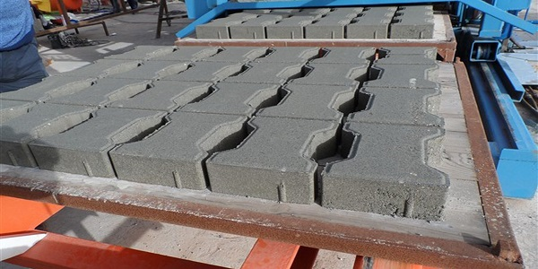
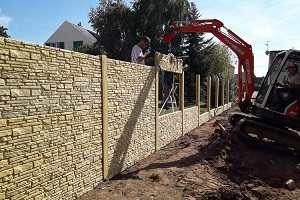
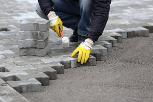

Fabrication
Nous fabriquons nous même nos pavés et clôtures en béton grâce au moules adéquate.
La fabrication des clôtures se fait en béton armé ce qui permet de rendre les clôtures beaucoup plus solides et d’augmenter aussi sa durabilité.
La pose
La pose peut être réaliser par vous même ou bien par nous avec des frais supplémentaire.
Pour la pose des clôtures des trous, qu'on rempliras de béton seront faites pour la maintient solide des poteaux.
Les pavés peuvent être poser sur un lit de sable ou la pose peut aussi être fait sur du chape de mortier, ce qui est plus adapté s’il y des dalles à recouvrir.



 Facebook
Facebook